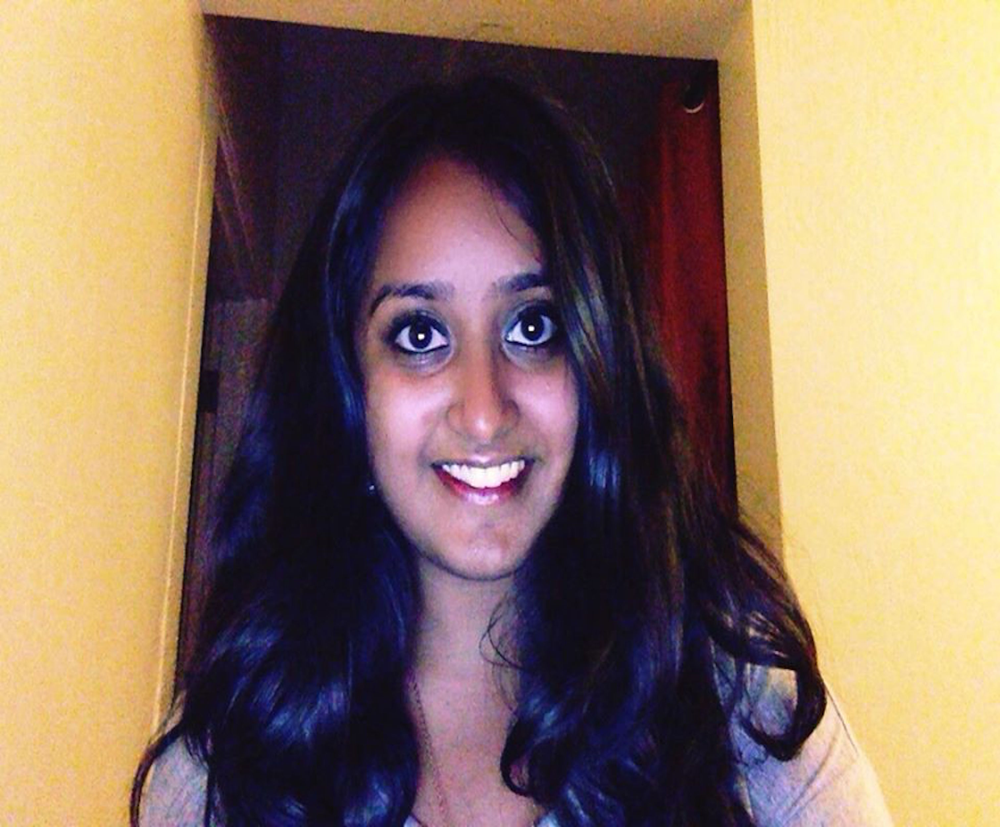
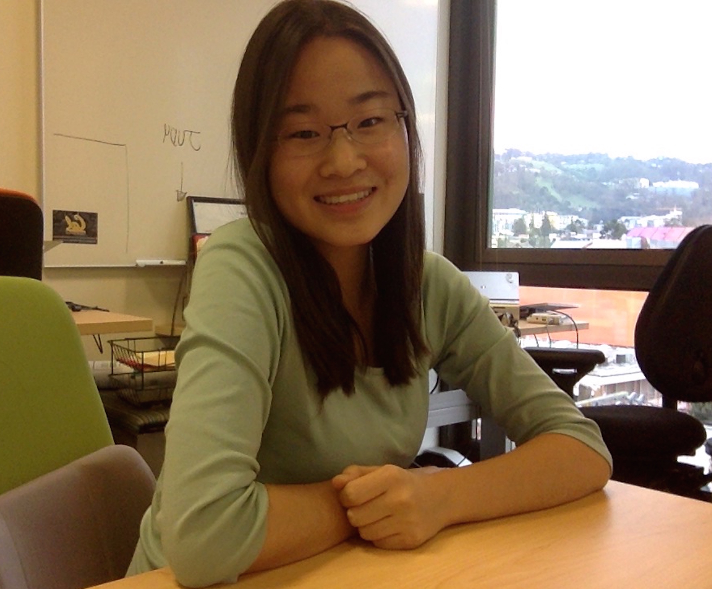
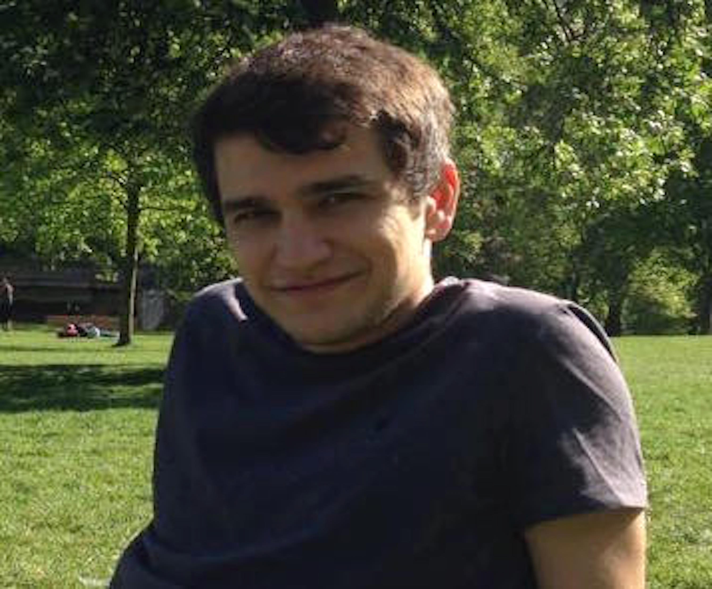
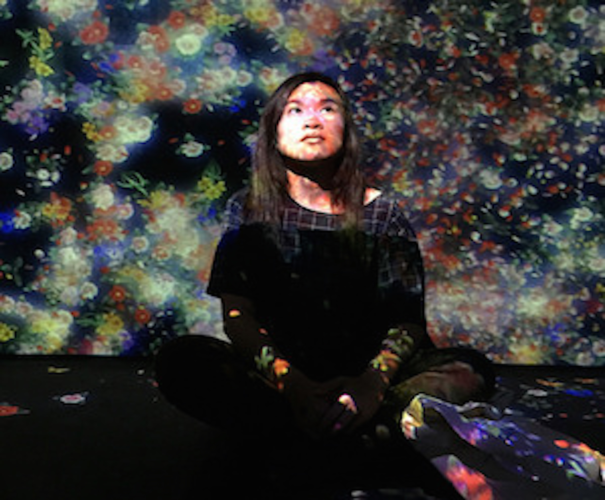
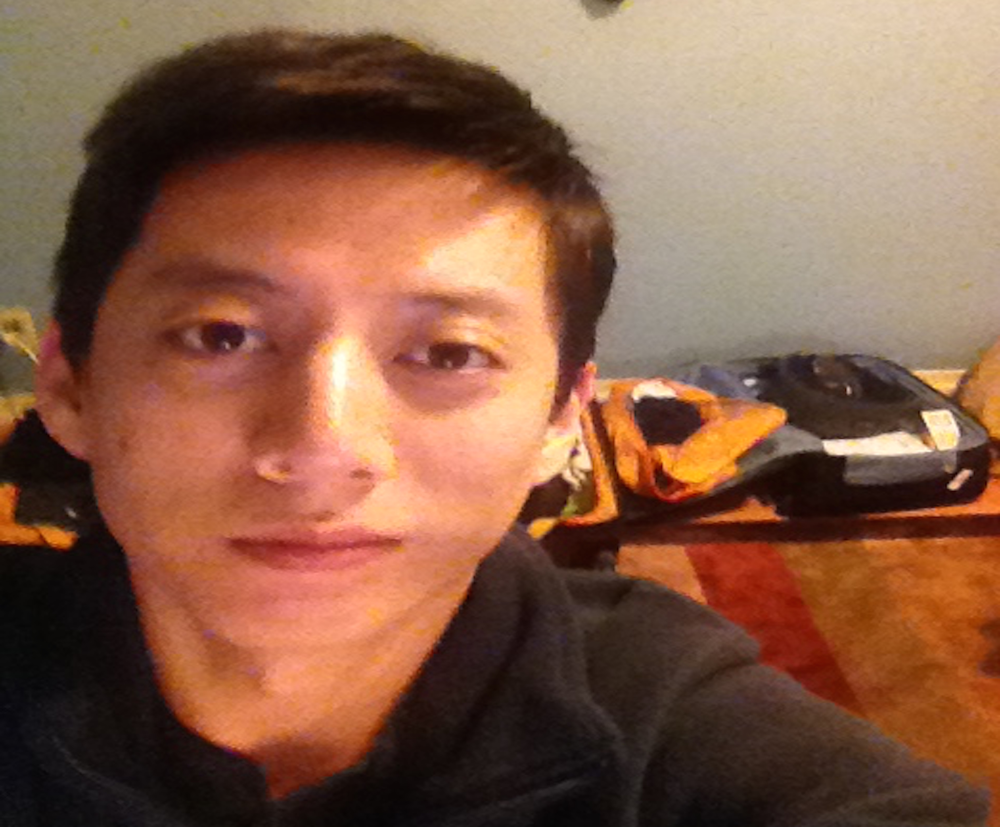
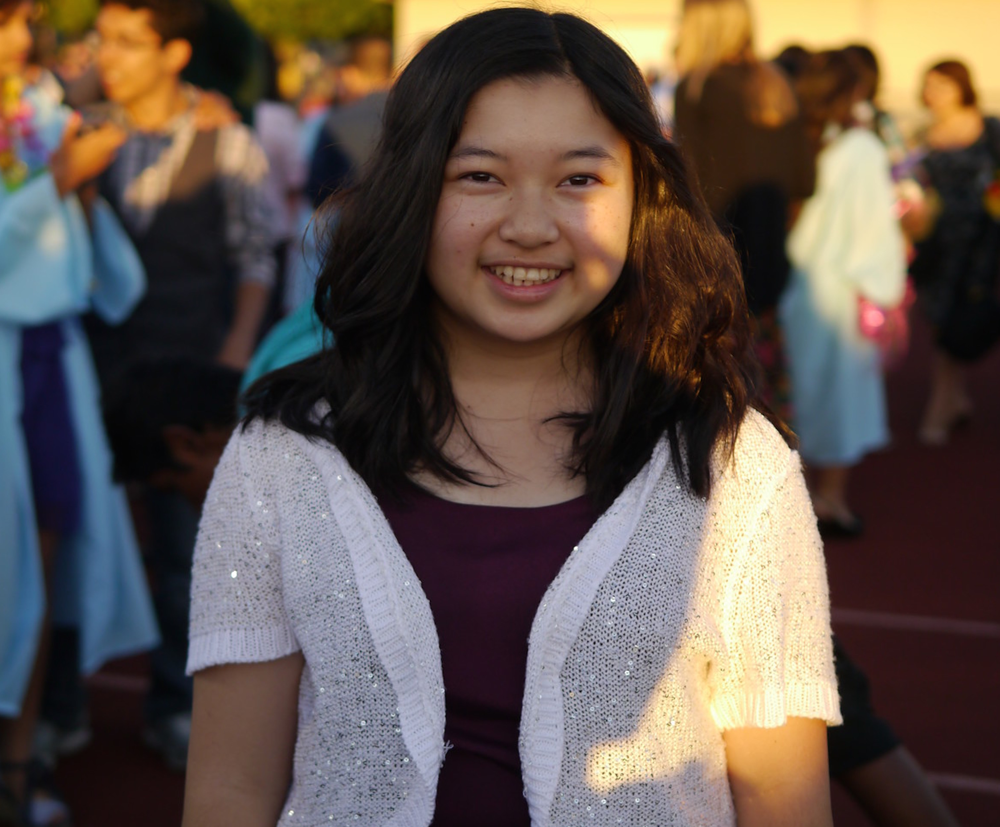
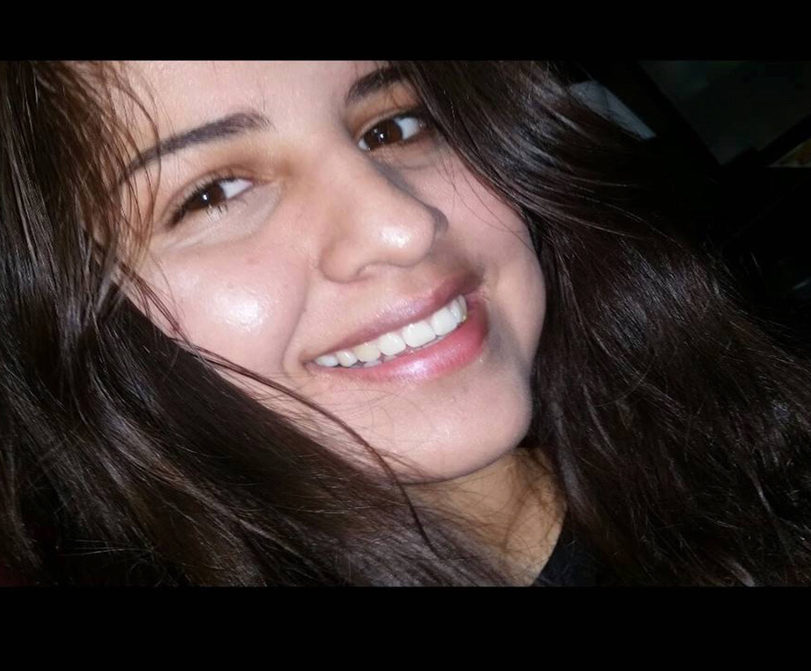
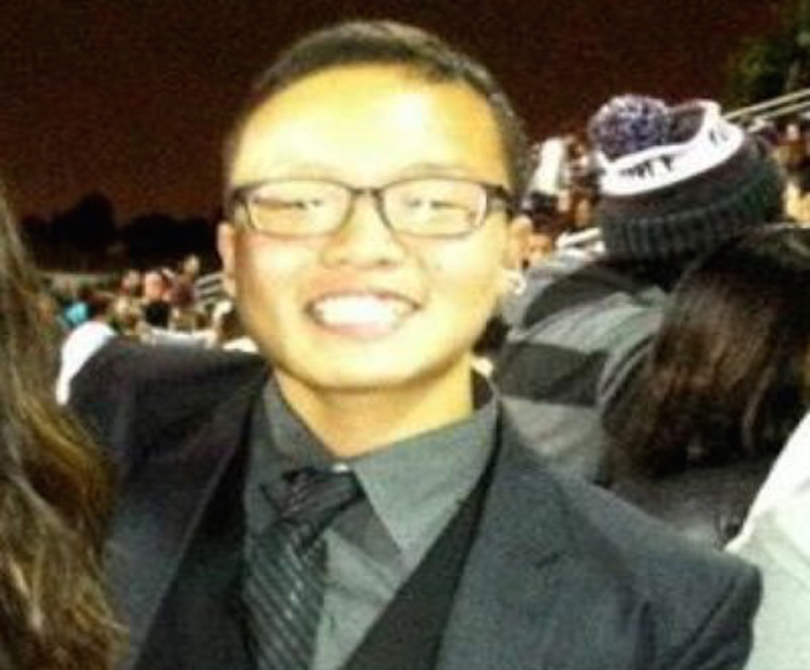

Vanita is a fourth-year Psychology major. She is most passionate about research related to language acquisition and perception, body language and emotion, patterns of mate selection and attraction, and neuropsychology / clinical applications. She is also a Research Assistant at the Fisher Idiographic Dynamics Lab, a clinical psychology lab focusing on personalized therapy for anxiety, depression, and traumatic stress. Outside of academic pursuits, Vanita is training for her black belt in Taekwondo and she loves traveling and backpacking in new countries, learning new languages, doing yoga, and finding new adventures / activities to participate in around the SF Bay Area. Her favorite feeling is picking up enough of a language to get around in a foreign country and be understood by locals. She plans to pursue a PhD in Clinical Psychology with a focus on Neuropsychology.
Vanita Borwankar
Co-Editor-in-Chief
Jigyasa Sharma is a third-year Neurobiology major and Co-Editor-in Chief of UJPB. She is specifically interested in how biological mechanisms can manifest in psychological phenomenon in both normal and disease-states. Outside of the journal, she loves being outdoors, playing sports, and exploring Berkeley.
Jigyasa Sharma
Co-Editor-in Chief

Juwon is a third-year student double majoring in Computer Science and Linguistics, also in her third-year of UJPB. She's interested in cognitive science, computational psychology, neural networks and psycholinguistics. Outside of classwork, Juwon enjoys cooking, listening to music, doing her own research or editing for another journal. After graduation, Juwon wants to do something innovative between multiple disciplines such as Computer Science, Linguistics, and of course Psychology.
Juwon Kim
Co-Executive DirectorOlivia is a third year Psychology major, with an intended minor in Creative Writing. She loves music and is a member of the UC Women’s Chorale on campus. Besides singing, she enjoys reading novels, writing fiction, travelling, and watching her brother play baseball.
Olivia Cavagnaro
Co-Executive Director
Angelina is a fourth-year Psychology major. She is very passionate about psychological research pertaining to clinical psychology, cognition, cognitive development, sleep, sleep deprivation, neural activity, and neuropsychology. She is currently working at the Gopnik Cognitive Development Lab, focusing on causal learning among young children, the Golden Bear Sleep and Mood Clinic focusing on mood and sleep disorders, and the Walker Sleep and Neuroimaging Lab focusing on sleep deprivation. She is also a peer counselor for Student-to-Student Peer Counseling, an organization that provides free, confidential, one-on-one counseling available to all students of UC Berkeley. Outside of labs and school, Angelina is an avid indoor gardener and a coffee enthusiast driven to find the perfect cup of coffee in the Bay Area. In her spare time she loves to find new hiking trails. journal her adventures, and cuddle up with a nice book. After graduating from UC Berkeley, she hopes to attend medical school.
Angelina Oh
Marketing Director, Editor

Rodrigo is a third-year Psychology major and exchange student from the University of Glasgow. He is mostly interested in psychological research related to social psychology, diffusion of responsibility, cultural variations, psycholinguistics, early stages of development, and emerging adulthood. Outside of academic pursuits, Rodrigo has a vivid and active interest for art, especially cinema and music. He has worked in a few productions for short films and was part of a blues bland for several years. He is also interested in how art can be used for psychological therapeutic purposes.
Rodrigo Mella
Editor

Chelsea is a first-year intending to major in psychology. She is most interested in brain plasticity, cognitive science, the effects of mentality on wellness and social interaction, and the relationship between psychology and public health. Currently, she is a research assistant at the Berkeley Social Interaction Laboratory, which is headed by Dr. Keltner and studies the effects of culture and morality on individuals and societies. In her free time, Chelsea likes to go to the gym, visit art museums, read (her favorite author is Haruki Murakami), grab coffee with friends, and watch TV shows such as Twin Peaks and Stranger Things. She also REALLY likes playing with cats and dogs and has two dogs of her own.
Chelsea Chen
Editor

Jin is a third-year psychology major. He is pursuing an academic career in clinical psychology that he hopes will take him to a position of a resident psychologist at a clinic or psychiatric facility some day. He is intrigued by all of the different approaches to abnormal psychology, and his most recent interests are Cognitive-Behavioral Therapy and the person-centered approach by Carl Rogers. Jin believes that a supportive therapist backed with up-to-date scientific knowledge can provide enormous help to patients who need them. He is a Korean-born, American-raised, Japanese-cultured, multi-hyphen identity with an obsession for raw denim and carpentry for some reason.
Jinyoung Kim
Editor
Pauline is a third year Pre-physical therapy psychology major, Spanish & Disability Studies minor.She is also a Research Assistant studying the shifts in healthcare as chronic illness becomes more prevalent in the US. In her free time, Pauline likes to run, bike, do yoga, and travel. She hopes to pursue a master’s degree in neuropsychology in the Netherlands after graduating.
Pauline Simes
Marketing Team Member, Editor

Michelle is a fourth year Computer Science major at UC Berkeley and has lived in the Bay Area all her life. She is really interested in how Linguistics, Psychology, and Computer Science relate and intersect. In the future, she is going to be a Software Engineer working on back-end frameworks in industry. In her free time, Michelle likes to read, play tennis, and play the piano.
Michelle Koo
Chief Technology Officer
Jean is currently a Sophomore at Berkeley. Her intended major is Psychology. There is still a lot for her to explore in the field, but she finds anything related to psychopathology/clinical psychology and cognitive psychology fascinating. She is also a research assistant at D’Esposito lab, a cognitive neuroscience laboratory within Helen Wills Neuroscience Institute. During her free time, she works as a Mandarin/Cantonese interpreter at medical events around Bay Area and watch all the corgi butt videos she can find.
Jean Ye
Editor
José is a second-year intended Computer Science and Mathematics double major. He is chiefly interested in the overlap between Psychology and Computer Science, including the fields of artificial intelligence and machine learning, neural networks, neuroimaging, and building models of neural computation. Aside from his academic interests, José enjoys writing songs on the piano and guitar, "shredding" on his PennyBoard, watching nature documentaries, and travelling. He is also a proud member of the Delta Upsilon fraternity. After college, he plans to pursue a PhD in Computer Science, or maybe be a rockstar if grad school doesn't work out.
José Antonio Luna-Bojalil
Editor

Genesis is a second-year Psychology major. She is most interested in clinical psychology, counseling, and behavioral and personality psychology. Genesis is interested in research that examines family structures and their influence on individuals. Her hobbies include watching Korean, Chinese, Brazilian, Japanese, and Spanish dramas, listening to all sorts of music from around the world, reading films, going to art museums, drawing portraits, dancing, learning new languages, and watching Anime. While an undergraduate student, Genesis plans to get involved in research and possibly internships. In the future, she plans to pursue a PhD in clinical psychology.
Genesis Mazariegos
Editor
